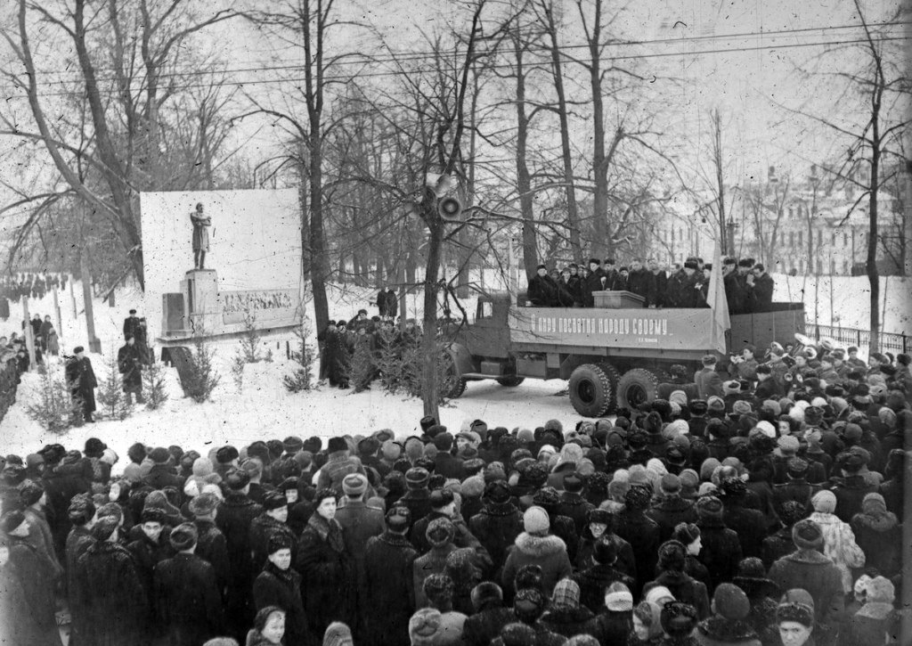
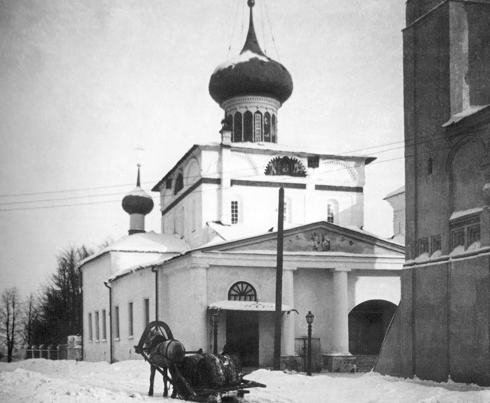
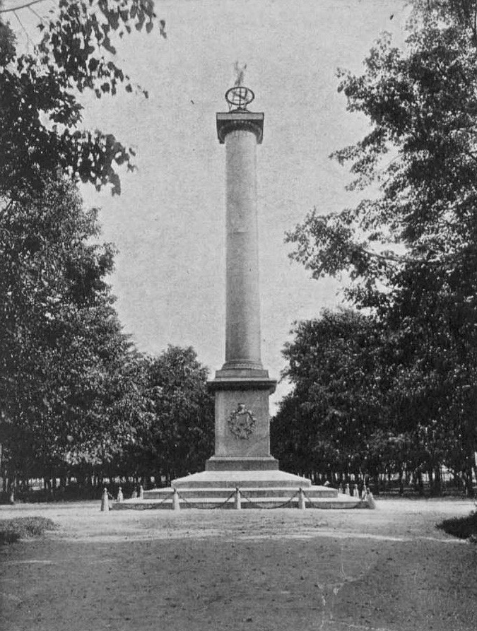
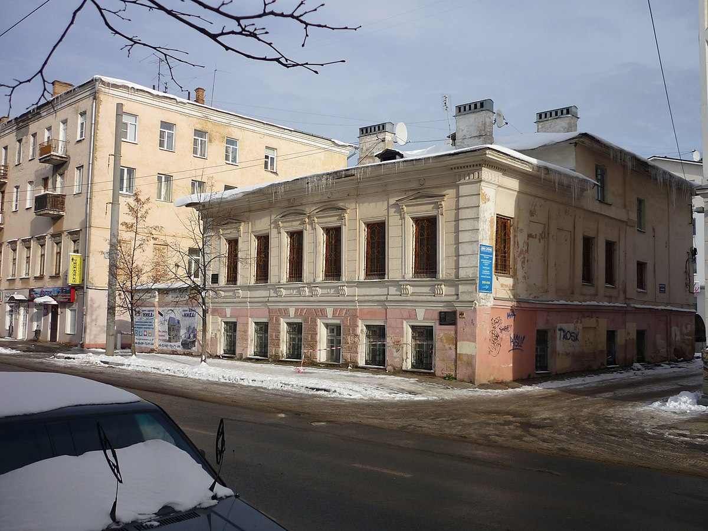
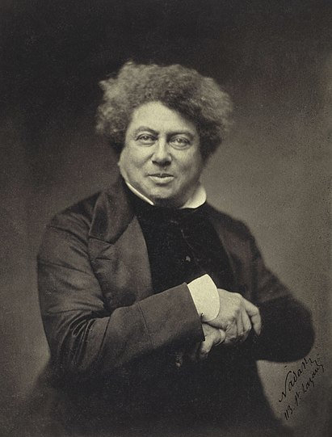

Тест к маршруту «Путешествие по XIX веку» На фотографии 1958 года - закладка памятника известному поэту. Память какого классика русской литературы увековечили на волжской набережной?  Л. Н. Трефолеву Нет, здесь установили памятник Николаю Некрасову. Н. А. Некрасову Верно. Монумент был установлен по проекту скульптора Георгия Мотовилова и архитектора Леонида Полякова. Церковь Рождества Христова находится на улице Кедрова, на пересечении её с Волжской набережной. Правда ли, что здесь был крещен знаменитый поэт Серебряного века Михаил Кузмин?  Верно Это так. Сам поэт писал: «За то, что вырос в Ярославле, / Свою судьбу благословлю!». Это ложь Кузмин действительно родился и был крещен в Ярославле. Поэт посвятил городу несколько строк: «За то, что вырос в Ярославле, / Свою судьбу благословлю!». «Памятник Ришелье» - так описал в своем дневнике Демидовский столп этот известный драматург, посетивший Ярославль. О ком идет речь?  А. Н. Островский Верно. Драматург побывал здесь в 1848 г. Он отмечал: «Ярославль – город, каких очень немного в России. Набережная на Волге уж куда как хороша». А. П. Чехов Чехов несколько раз бывал в Ярославле, но об этом памятнике не отзывался. Зато он навещал здесь своего брата – Михаила Чехова в доме по адресу ул. Некрасова, д. 20. На изображении здание, связанное с именем Константина Бальмонта. Что именно в нем располагалось?  Гостиница Нет, в этом доме находилась типография Г. В. Фалька, в которой вышла первая книга поэта — «Сборник стихотворений». Типография Верно. Здесь поэт издал первую книгу — «Сборник стихотворений». Одна из любопытных страниц в литературной истории России – приезд французского классика Александра Дюма. Правда ли, что известный романист останавливался в ярославской гостинице Пастухова?  Верно Дюма недаром относил себя к «путешественникам-лентяям». Писатель так и не сошел на ярославскую землю, а все сведения о городе получил от княгини Анны Долгорукой. Это ложь Вы правы, Дюма не был здесь. Во время поездки по России его пароход остановился на Волге, но сам писатель в город так и не сошел. Вернуться к маршрутам Вернуться к тестам